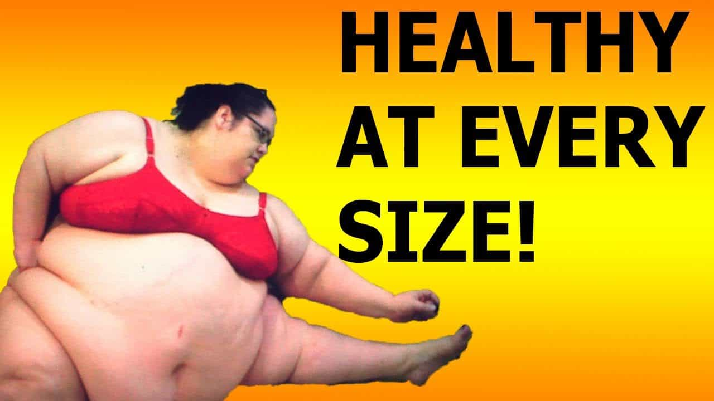

This account syndicates news from other media outlets.


Plus-size clothing ranges and models such as Ashley Graham may be normalising obesity, it has been warned, as growing numbers of people fail to realise they are overweight.
A study of more than 23,000 people has found more than half of men do not recognise they are overweight or obese. Almost a third of women underestimate their true weight, compared to under a quarter two decades ago.
The results are concerning because those who misjudge their size are 85 per cent less likely to try to lose weight.
The University of East Anglia research found only about half of overweight people were making efforts to slim down, which could put them at greater risk of heart attacks, strokes and type 2 diabetes.
Study author Dr Raya Muttarak said plus-size clothing ranges, such as Marks & Spencer’s Curve range for ‘curvy’ women sized 18 to 32, may be behind people’s denial about their weight.
She said: ‘Seeing the huge potential of the fuller-sized fashion market, retailers may have contributed to the normalisation of being overweight and obese.
‘While this type of body positive movement helps reduce stigmatisation of larger-sized bodies, it can potentially undermine the recognition of being overweight and its health consequences.
The increase in weight misperception in England is alarming and possibly a result of this normalisation.’
There has been a rise on the high street in ‘vanity sizing’, where dress sizes are inflated for women with larger waists and hips and bigger busts, to flatter them that they wear a smaller size. Experts say this can ‘undermine’ action to lose weight.

The study analysed the Health Survey for England, to find the answers of 23,459 people asked whether they were about the right weight, too heavy or too light.
The results, analysed for five years between 1997 and 2015, show the proportion of overweight men in denial has leapt from 48.4 per cent to 57.9 per cent in that period.
At the same time, the proportion of overweight women misjudging their weight has jumped from 24.5 per cent to 30.6 per cent.
The study, published in the journal Obesity, says the normalisation of being large has become ‘widespread’ in England, with men most likely to ignore their weight problem.
On the Marks & Spencer range, Dr Muttarak wrote: ‘By introducing a new design and styling tailored for plus-size customers and using carefully selected fabrics complementing fuller figures, Curve primarily contributes to promoting body positivity.
‘While this type of body-positive movement helps reduce stigmatisation of larger-sized bodies, it can potentially undermine the recognition of being overweight and its health consequences.’

Among people who were overweight and obese, 38.5 per cent of men and 17.2 per cent of women thought they were ‘about the right weight’. The proportion of obese men misperceiving their weight in 2015 was almost double that seen in 1997.
People who underestimated their weight were 85 per cent less likely to try to lose it, with only 51.8 per cent of those who were overweight in the study telling the Health Survey they were trying to shed the pounds.
Almost two-thirds of adults in Britain are overweight or obese, with the study focusing on those with a body mass index (BMI) of 25 or over, classed as overweight, and of 30 or over, classed as obese.
Dr Muttarak, a senior lecturer in UEA’s School of International Development, said: ‘Identifying those prone to misperceiving their weight can help in designing obesity-prevention strategies targeting the specific needs of different groups.’
Don’t Miss: Let’s End The Obesity Epidemic By Requiring Fat People To Wear Burqas